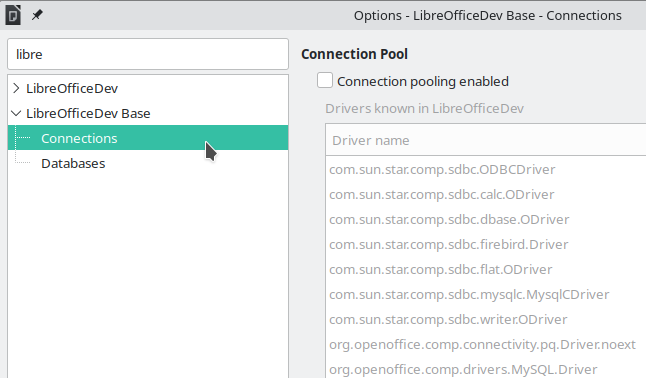

Week #2 - GSoC 2023 Weekly Report - Search Field in Options
Current progress for week #2
- In week #1, search functionality was implemented only for headers of the options TreeView. (“Tools > Options” - left pane tree).
We should expand the search functionality to include the sub-headers(sub-elements) of the nodes. For example; if you type “libre”, search function will look if there is any match only in headers. But we should also check their child nodes(sub-headers) to be ensure if there will be any match with the search term.

- Sub-tree elements(child nodes) are now included in searching.
Patchset 2: https://gerrit.libreoffice.org/c/core/+/152519/2
If user types "japanese", search function will find the match in "Searching in Japanese" and will show its parent node - which is "Language Settings", as shown below. However, if we only search in headers, this would not be possible and the left pane would be empty - nothing would be shown.
As you can see at the bottom line of the terminal; if there is a match, debug prints "found: <full string of where search item found> : <its parent ID>".
- Some technical details
All TreeView nodes and their child nodes are stored in a std::vector as a std::pair.
std::vector<std::pair<OUString, sal_uInt16>> storedIdVector;// store Options tree with their sub elements
void OfaTreeOptionsDialog::storeOptionsTree()
{
storedIdVector.clear();
{
std::unique_ptr<weld::TreeIter> xEntry = xTreeLB->make_iterator();
bool bEntry = xTreeLB->get_iter_first(*xEntry);
sal_uInt16 currentTreeElementId = 0;
// iterate over the tree and their sub-tree elements
while (bEntry)
{
OptionsGroupInfo* pGroupInfo = weld::fromId<OptionsGroupInfo*>(xTreeLB->get_id(*xEntry));
if (!xTreeLB->get_iter_depth(*xEntry))
{
currentTreeElementId = pGroupInfo->m_nDialogId;
storedIdVector.push_back({xTreeLB->get_text(*xEntry) ,currentTreeElementId});
}
else
{
storedIdVector.push_back({xTreeLB->get_text(*xEntry) ,currentTreeElementId});
}
bEntry = xTreeLB->iter_next(*xEntry);
}
}
}Search function searchs through all first elements of std::pair<OUString, sal_uInt16>. If there is a match, the second element - which is the ID of the parent node - will be added to left pane as a node.
int OfaTreeOptionsDialog::applySearchFilter(OUString const& rSearchTerm)
{
if (rSearchTerm.isEmpty())
{
clearOptionsDialog();
xTreeLB->clear();
Initialize(m_xFrame);
return 0;
}
m_options.searchString = rSearchTerm;
utl::TextSearch textSearch(m_options);
clearOptionsDialog();
if (xTreeLB->n_children() > 0)
{
xTreeLB->clear();
}
std::vector<sal_uInt16> foundIdsVector;
for (std::size_t i = 0; i < storedIdVector.size(); ++i)
{
OUString itemName = storedIdVector[i].first;
sal_uInt16 itemId = storedIdVector[i].second;
sal_Int32 aStartPos = 0;
sal_Int32 aEndPos = itemName.getLength();
// make search
if (!textSearch.SearchForward(itemName, &aStartPos, &aEndPos))
{
// debug ("not found: " << itemName << " : " << itemId);
}
else
{
// debug ("found: " << itemName << " : " << itemId);
bool isFound = false;
for (auto entryId : foundIdsVector)
{
if (entryId == itemId)
{
isFound = true;
}
}
if (!isFound)
{
foundIdsVector.push_back(itemId);
/*
void generalOptions(); // SID_GENERAL_OPTIONS
void loadAndSaveOptions(); // SID_FILTER_DLG
void languageOptions(); // SID_LANGUAGE_OPTIONS
void writerOptions(); // SID_SW_EDITOPTIONS
void writerWebOptions(); // SID_SW_ONLINEOPTIONS
void calcOptions(); // SID_SC_EDITOPTIONS
void impressOptions(); // SID_SD_EDITOPTIONS
void drawOptions(); // SID_SD_GRAPHIC_OPTIONS
void mathOptions(); // SID_SM_EDITOPTIONS
void databaseOptions(); // SID_SB_STARBASEOPTIONS
void chartOptions(); // SID_SCH_EDITOPTIONS
void internetOptions(); // SID_INET_DLG
*/
switch(itemId)
{
case SID_GENERAL_OPTIONS:
generalOptions();
break;
case SID_FILTER_DLG:
loadAndSaveOptions();
break;
case SID_LANGUAGE_OPTIONS:
languageOptions();
break;
case SID_SW_EDITOPTIONS:
writerOptions();
break;
case SID_SW_ONLINEOPTIONS:
writerWebOptions();
break;
case SID_SC_EDITOPTIONS:
calcOptions();
break;
case SID_SD_EDITOPTIONS:
impressOptions();
break;
case SID_SD_GRAPHIC_OPTIONS:
drawOptions();
break;
case SID_SM_EDITOPTIONS:
mathOptions();
break;
case SID_SB_STARBASEOPTIONS:
databaseOptions();
break;
case SID_SCH_EDITOPTIONS:
chartOptions();
break;
case SID_INET_DLG:
internetOptions();
break;
default:
break;
}
}
}
}
// if treeview is empty, return -1
return xTreeLB->n_children() ? 0 : -1;
}Summary
- Sub-tree elements(child nodes) are now included in searching.
- Patchset 2 has been submitted: https://gerrit.libreoffice.org/c/core/+/152519/2
Steps for implementing search functionality in “Tools > Options”:
| 1) Add Search field to “Tools > Options” dialog. | DONE - week #1 |
| 2) Options treeview. | DONE - week #1 |
| 3) Sub-tree elements (child nodes). | DONE - week #2 |
| 4) Strings(labels) in all dialogs. | Next step |
| 5) Tooltip texts. | ... |
| 6) Accessible descriptions. | ... |
| ... | ... |
***
Patch: https://gerrit.libreoffice.org/c/core/+/152519
GSoC project page: https://summerofcode.withgoogle.com/programs/2023/projects/IKtSHIH1
Enhancement request on Bugzilla: https://bugs.documentfoundation.org/show_bug.cgi?id=49895